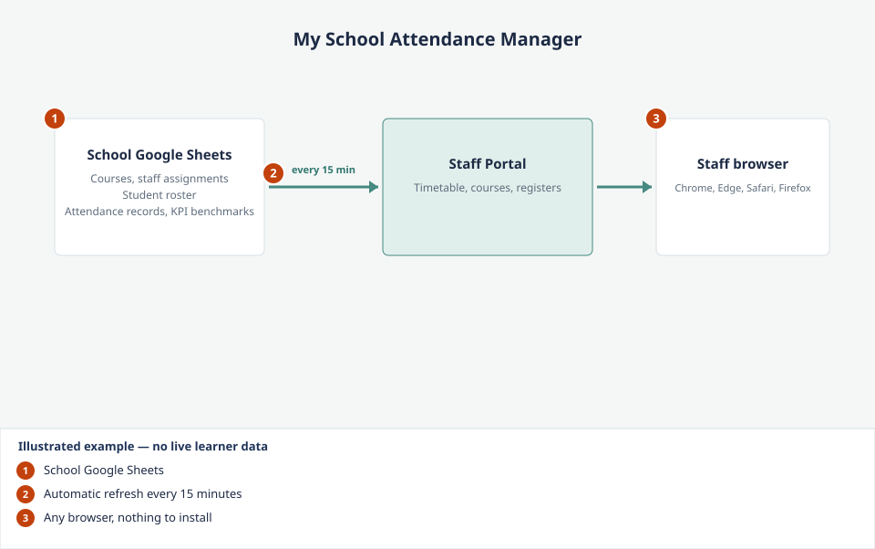

Getting started
What is the Staff Portal?
What to look for

- School Google Sheets. The school's Google Sheets hold course, student and attendance data.
- Automatic refresh every 15 minutes. The portal refreshes itself, so information stays up to date.
- Any browser, nothing to install. Staff open the portal address on a school device, phone or tablet.
Staff Guide — 2024 / 25. A complete staff portal for tracking attendance, managing courses, and viewing timetables — all in one place.
The My School Attendance Manager is a secure, web-based portal that gives every member of staff a personalised view of their timetable, courses, and learner data. It connects directly to the school's Google Sheets data — so information is always up to date, refreshing automatically every 15 minutes.
There is nothing to install. Staff simply open a web browser on any device and go to the address above.
Portal address: https://my-school-attendance-manager.replit.app
This is publicly accessible — staff can use it from home, on a mobile, or on any school device.
This is publicly accessible — staff can use it from home, on a mobile, or on any school device.